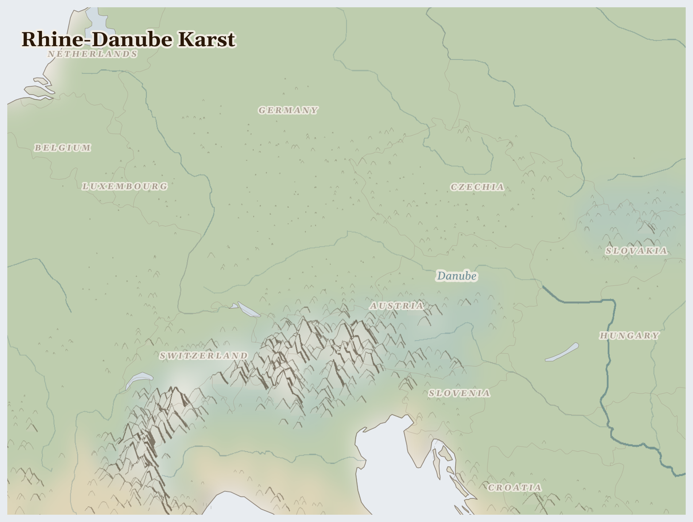

Rhine-Danube Karst
Belgium, Hungary, Switzerland and 8 more countries
Palearctic
The green heart of Europe, where two great rivers — the Rhine and the Danube — begin in the Alps and wind through many countries, past castles on hilltops, deep forests, and cities of bells and bridges. Under some of the hills, water has hollowed out secret caves full of stone icicles.
How Life Works Here
The rivers are Europe's highways: long barges carry goods from country to country along them. Forests give timber, farms give grapes and grain, and factories here make cars and machines sent all over the world.
Rhine shipping companies, Industrial manufacturers along river corridors.
Family dairy farms (consolidating under subsidy pressure), Eastern European seasonal farmworkers.
Hydropower operators (Austria, Switzerland), Downstream irrigators and municipal utilities.
What Is Happening
This is a calm, wealthy, peaceful place. Its lovely lesson is about sharing: the Rhine and the Danube each flow through many different countries, so those countries must work together to keep the water clean for everyone downstream — and once, when the Rhine grew so dirty the fish vanished, the nations along it joined hands to clean it, and the fish came back. Now they watch over it together.
Something Wonderful
The salmon returned to the Rhine! After the great river was cleaned up by the countries that share it, fish that had disappeared for decades swam home again. And deep in the karst caves, water dripping for thousands of years builds stone spikes so slowly that one the length of your finger may have taken a hundred years to grow.
Let's Do Something Together
Follow Water on a Map
Find a river on your map or globe. Trace it with your finger from where it starts high up in the mountains all the way down to where it meets the sea. Water travels a very long way! Families who live near this river use it to drink, to wash, and to grow food.
- world map or globe
- blue crayon or marker
For grown-ups
Rivers in this region are contested resources — upstream dams and irrigation diversions reduce flow to downstream communities who depend on seasonal flooding for agriculture.
Let Us Pray Together
Thank you, God, for water. Help the families who need clean water today.
Leader: We pray for Hungary. For Hungary, where multiple pressures are interacting and the situation is escalating.
All: Lord, hear our prayer.
Leader: We pray for the helpers. For humanitarian workers and missionaries in Rhine-Danube Karst.
All: Lord, hear our prayer.
Leader: We pray for seeds of hope. For every act of resistance and care in Rhine-Danube Karst.
All: Lord, hear our prayer.
O praise the Lord, all you nations; praise him, all you peoples. For great is his steadfast love towards us, and the faithfulness of the Lord endures for ever. Alleluia.
Collect
Lord of all power and might, the author and giver of all good things: graft in our hearts the love of your name, increase in us true religion, nourish us with all goodness, and of your great mercy keep us in the same; through Jesus Christ your Son our Lord, who is alive and reigns with you, in the unity of the Holy Spirit, one God, now and for ever.
Amen.
Talk About It
Everyone who lives along the river has to keep it clean for the people downstream. What is something you share with others that only stays nice if everyone takes care of it?
One Thing We Can Do
Rivers carry whatever we put in them all the way to the next town and the sea. Pick up one piece of litter near any water today, and thank God for the neighbours who cleaned a great river together.